Fabrication for Care
Project development Idea
Our goal is to make a project that can help someone with any disability. To make this possible the idea has to be thought deeply due to it has to help the people or the person and to not cause any harmful side effect. My first idea was to produce some kind of exoesqueleton that can help the people to walk, maybe because they have some difficulty in learning, or because their muscles forgot how to work properly owing to some illness. To make it possible, maybe some leg muscle can be stimulated as the biceps due to it is the one which is used to bend the knee. A different idea was to design a bra for women who had suffered a mastectomy. The design of the filling wil be modified depending on each woman, so that both breasts look the same. Definetly, the bra will not have a hoop. It would be also very nice, to add some weight to some area to make uniform both brasts and avoid back problems. Both ideas have to be seriously thought out, if in the end it is wanted to carry them out.ARDUINO INTRODUCTION
Arduino is an open source and open hardware company as well as an international project and community that designs and manufactures hardware development boards to build digital devices and interactive devices that can detect and control real-world objects
Firstly, it is necesary to acquire soma base in electronics. Noteworthy is the fact that there are two types of circuits, in series and in parallel, as shown in the pictures below. 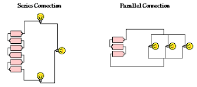 A parallel circuit is one that has two or more paths for the electricity to flow, the loads are parallel to each other. If the loads in this circuit were light bulbs and one blew out, there is still current flowing to the others because they are still in a direct path from the negative to positive terminals of the battery. In this case, the voltage in the differentn bulbs are the same, but the intensity changes. A series circuit is one with all the loads in a row. There is only one path for the electricity to flow. If this circuit was a string of light bulbs, and one blew out, the remaining bulbs would turn off. The current in a series circuit goes through every component in the circuit. Therefore, all of the components in a series connection carry the same current. However, the voltage is split. To see how the current flows, we create a circuit with some cables, a conductor textil and a LED. It is shown in the picture below. 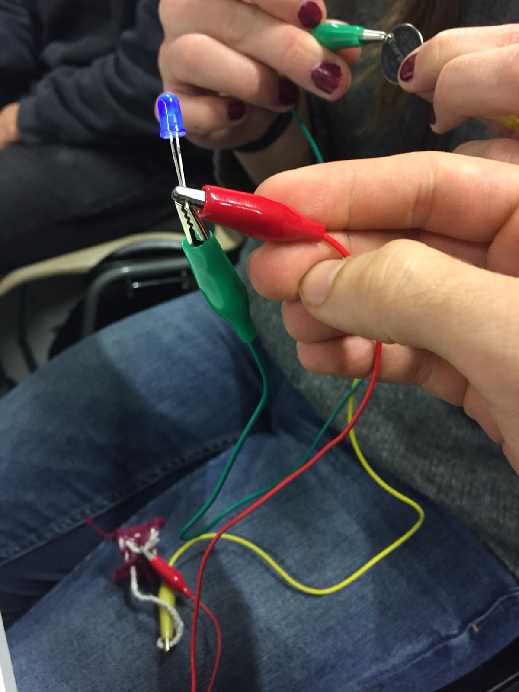 The materials required to work with an Arduino are: The Arduino , a breadboard , the wires, some LEDs and the cable to connect the arduino with the computer. 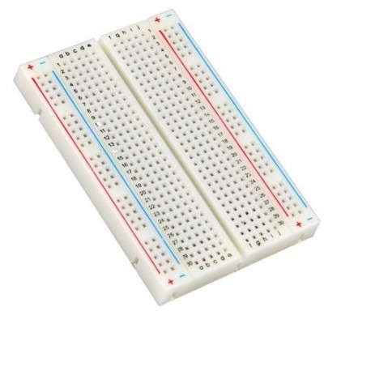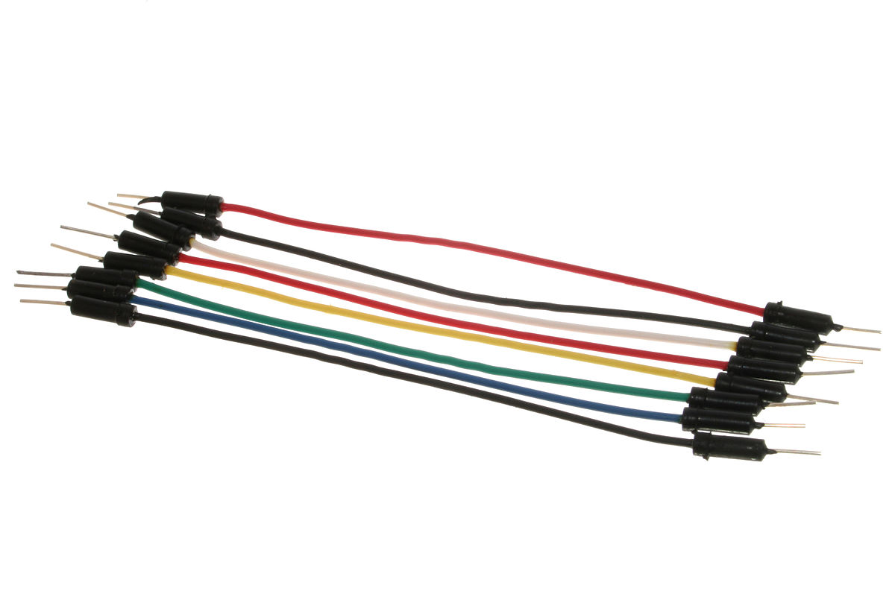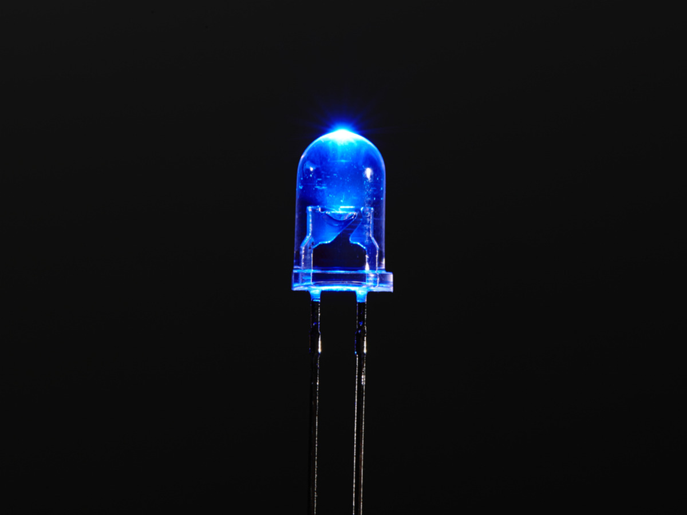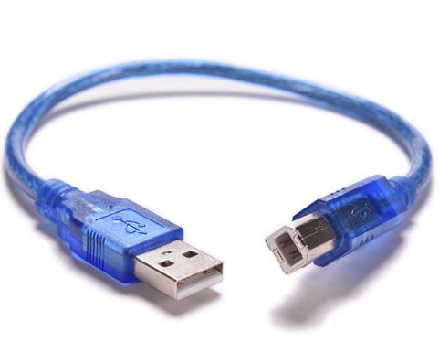
We create a circuit to get familiar with the materials. It was learnt that the ground has to be connected with the negative while the volties (5 volties in our case) has to be connected with the possitive line. The led was also connected to the breadboard, as it is possible to see in the following picture.
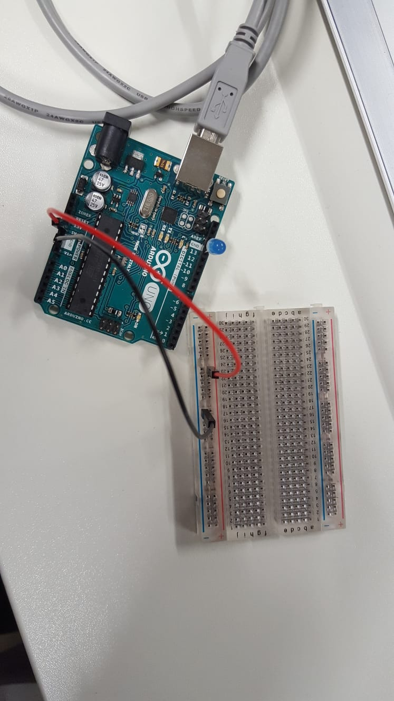
To learn the basics of arduino, we used the software "ARDUINO". We went to "Archive" --> "Examples" --> "01.Basics" --> "Blink". After this steps, we changed the outputs sawing in the Arduino how these changes affected.
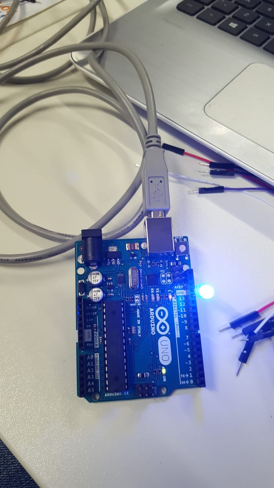
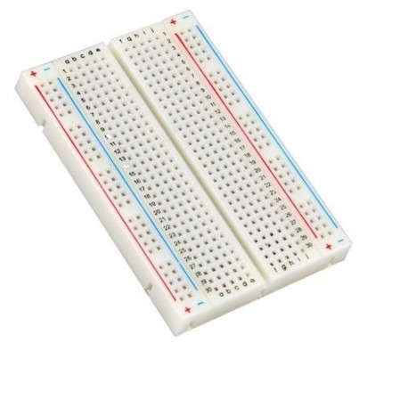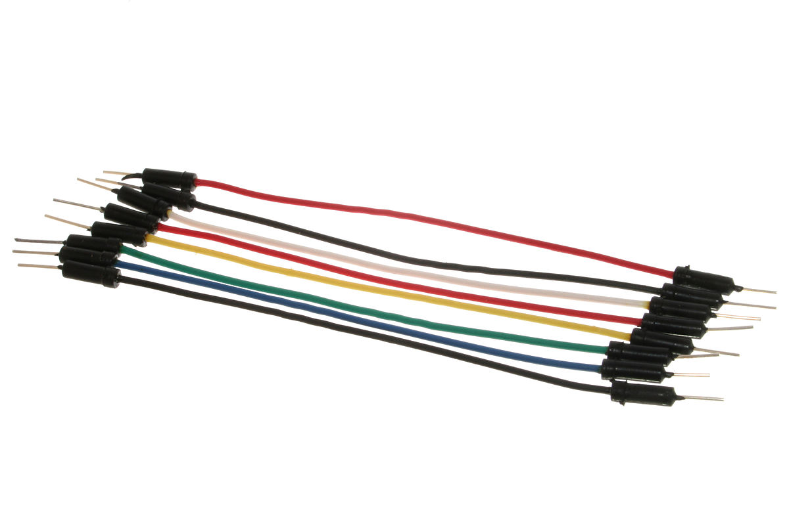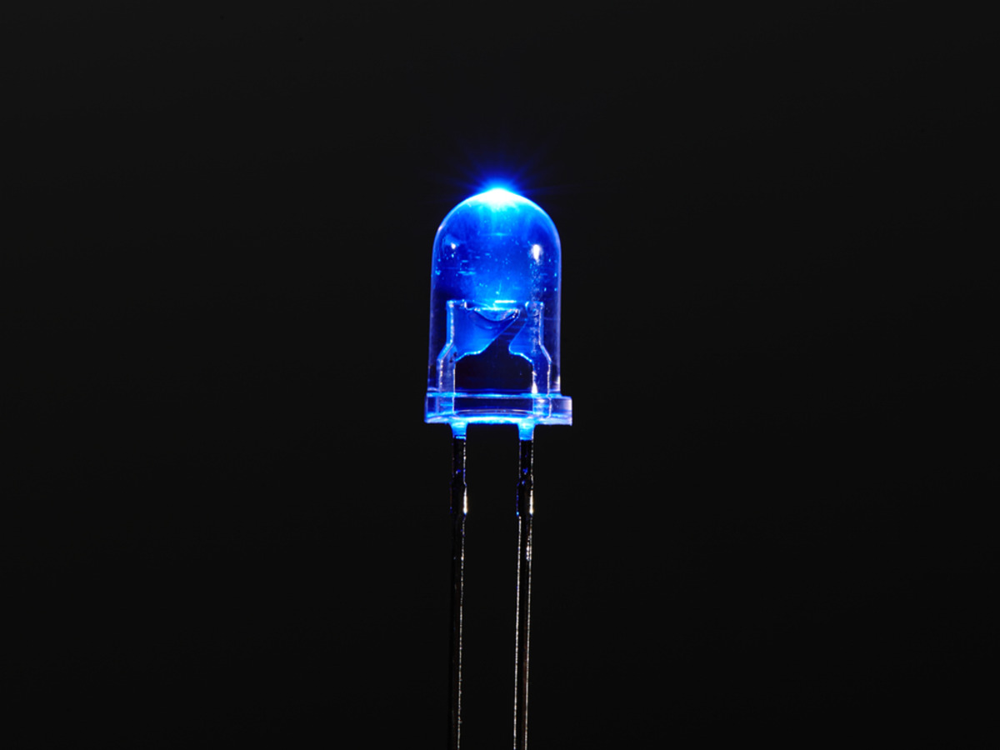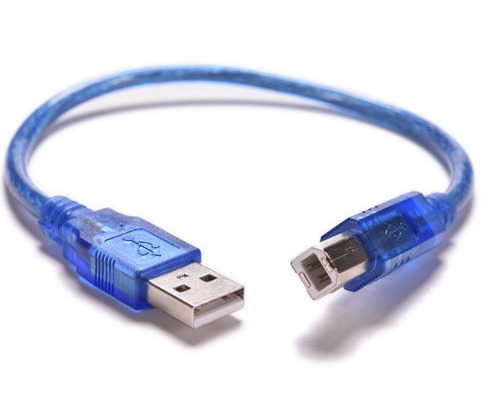
We create a circuit to get familiar with the materials. It was learnt that the ground has to be connected with the negative while the volties (5 volties in our case) has to be connected with the possitive line. The led was also connected to the breadboard, as it is possible to see in the following picture.
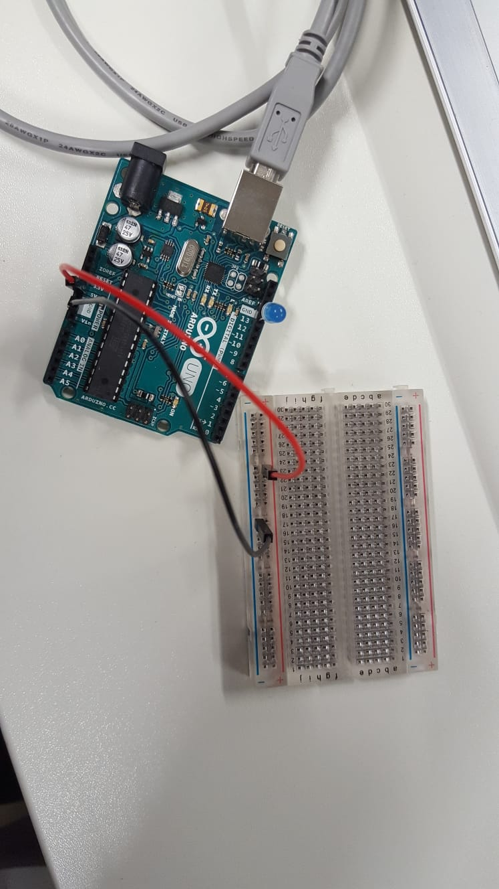
To learn the basics of arduino, we used the software "ARDUINO". We went to "Archive" --> "Examples" --> "01.Basics" --> "Blink". After this steps, we changed the outputs sawing in the Arduino how these changes affected.
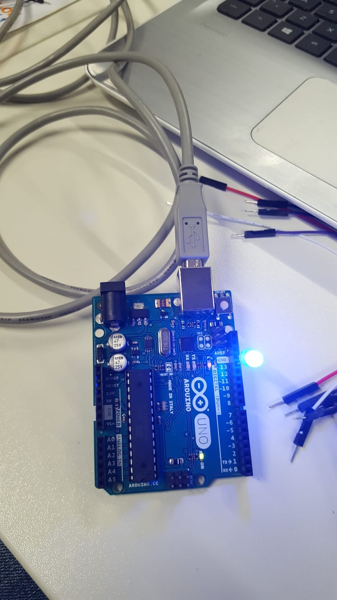